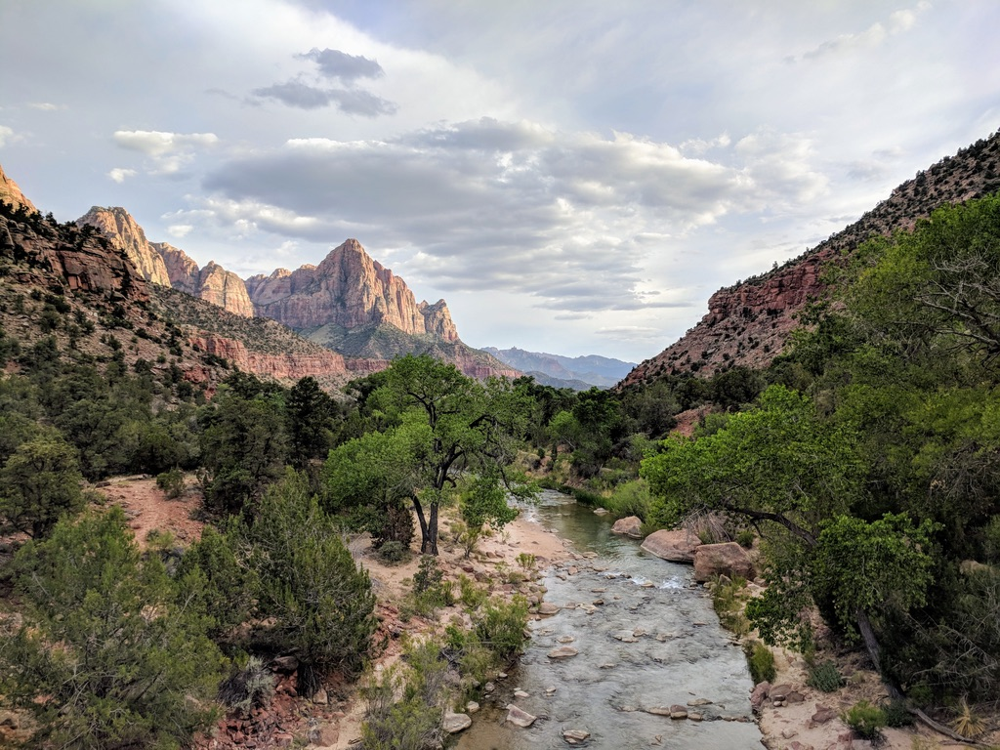
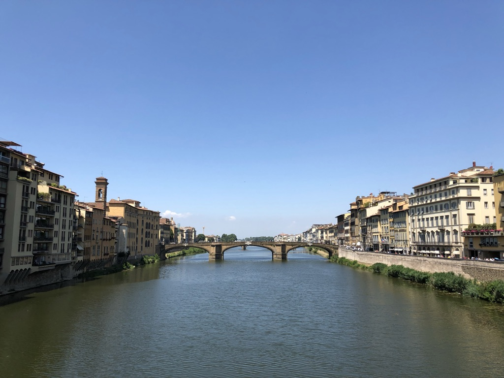
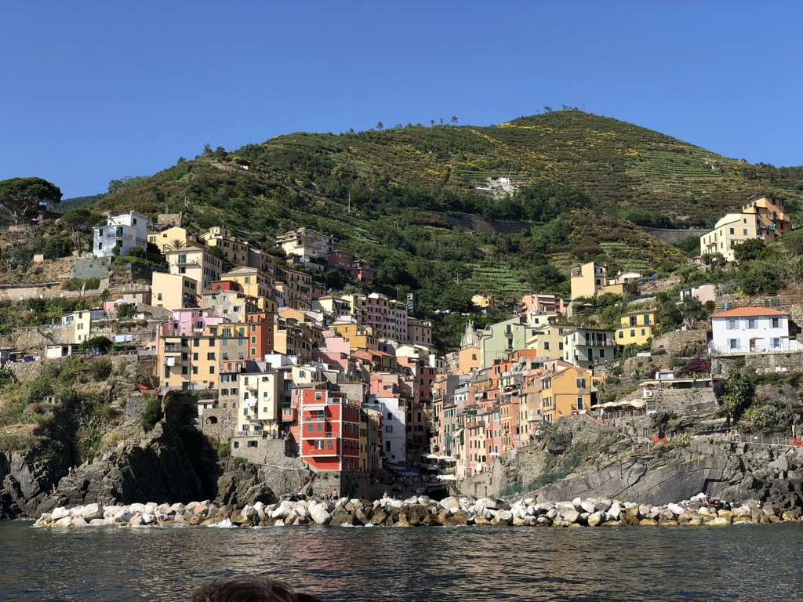

About Me
Hello! I am a current undergraduate student interested in the intersection of technology, data, and entrepreneurship. Currently seeking a summer internship at a fast paced technical company to gain skills, mentorship, and expertise. I am skilled in Full Stack Web Development, Statistics, Entrepreneurship, Design, and Venture Capital. I love to work on new project ideas to build my skills and growth as an individual from hobby projects to a fully fledged startup.
  